٠١ — الجدول
جدولُك صورةٌ… فيصير تطبيقاً
ارفع صورةَ جدولك الأسبوعيّ، فيُقرأ ويُبنى: خمسةُ أيامٍ في سبع حصص، وفصولُك تُنشأ معه بأسمائها ومراحلها — ثمّ لا تعود إليه.
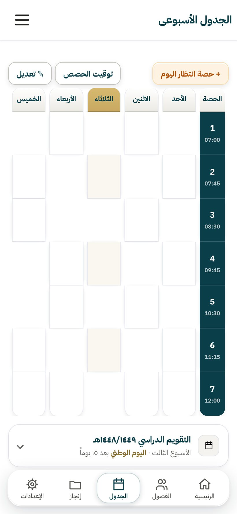
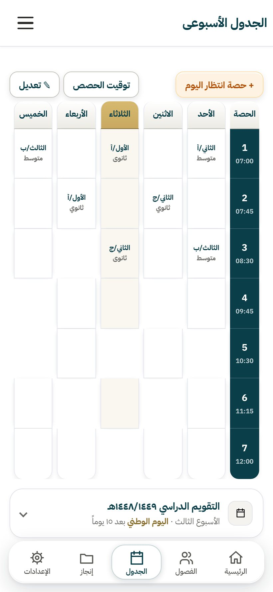
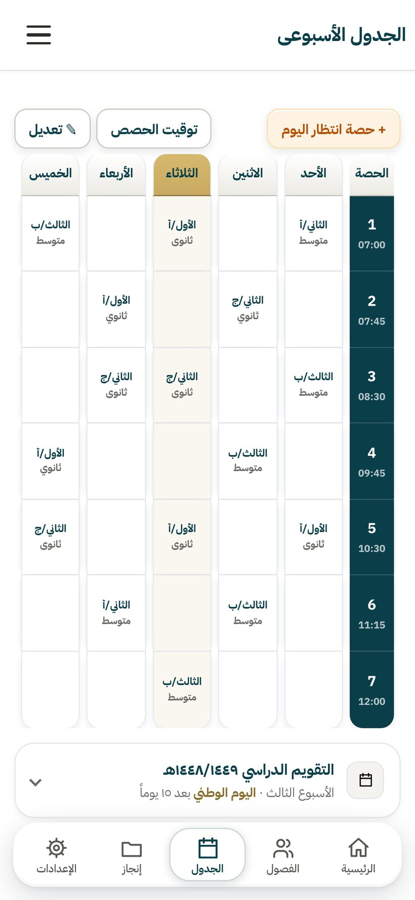
منظومةٌ متكاملةٌ لإدارة عمل المعلّم — تعمل بلا إنترنت، وتُخرج ورقاً رسميّاً بضغطة.
كلُّ لقطةٍ هنا من التطبيق نفسِه، مأخوذةٌ وهو يعمل بلا إنترنت. مرِّر لتنزل من شاشةٍ إلى التي تليها.
ارفع صورةَ جدولك الأسبوعيّ، فيُقرأ ويُبنى: خمسةُ أيامٍ في سبع حصص، وفصولُك تُنشأ معه بأسمائها ومراحلها — ثمّ لا تعود إليه.



حصصُ اليوم مرتَّبةً بأوقاتها، وحصّتُك الجاريةُ الآن في بطاقةٍ واحدةٍ معها زرُّ سجلّها — تفتحه وأنت واقفٌ أمام الصفّ.
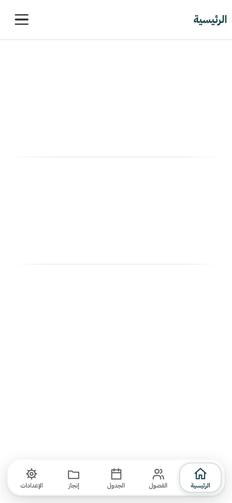
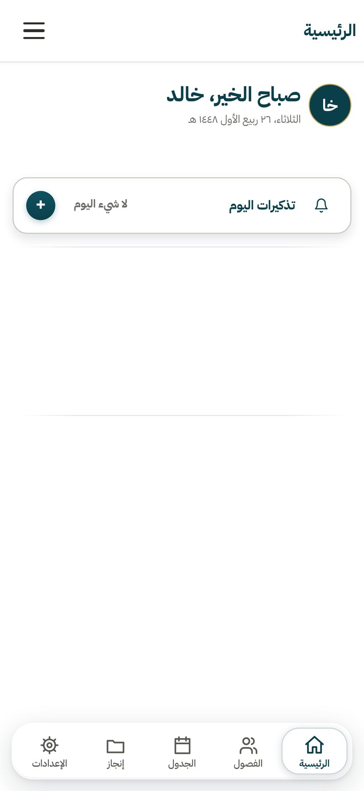
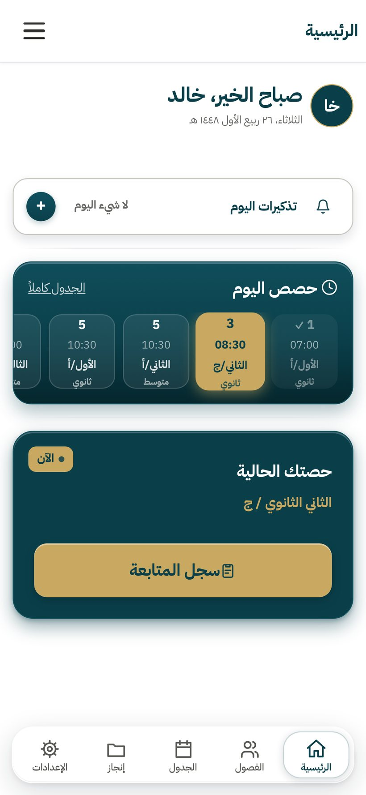
أربعُ حالاتٍ للحضور بضغطةٍ واحدة، وخاناتُ تقييمٍ تصنعها أنت كما تريدها. والأسماءُ تُستورَد من كشفِ إكسل أو صورة — بلا دمجٍ ولا حذفِ اسم.
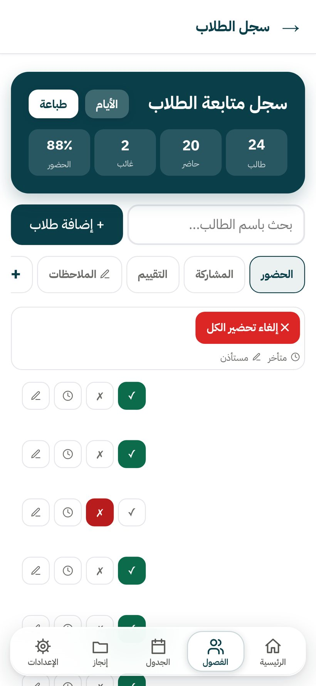

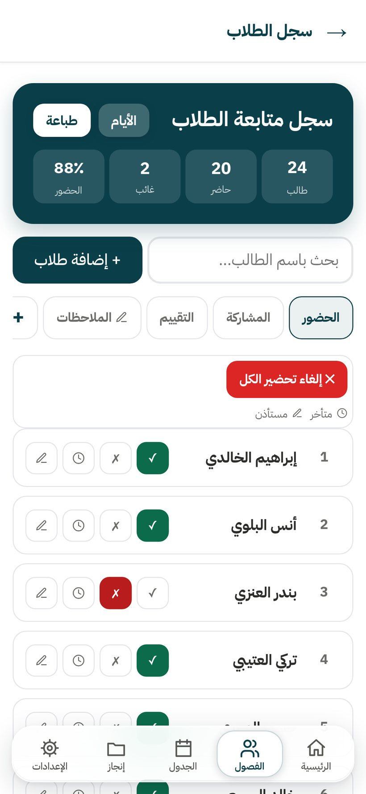
ابتدائيٌّ ومتوسّطٌ وثانويّ. ولكلِّ فصلٍ ستّةُ تبويبات: طلابُه وكتبُه وتوزيعُ منهجه واختباراتُه وأوراقُه وواجباتُه.
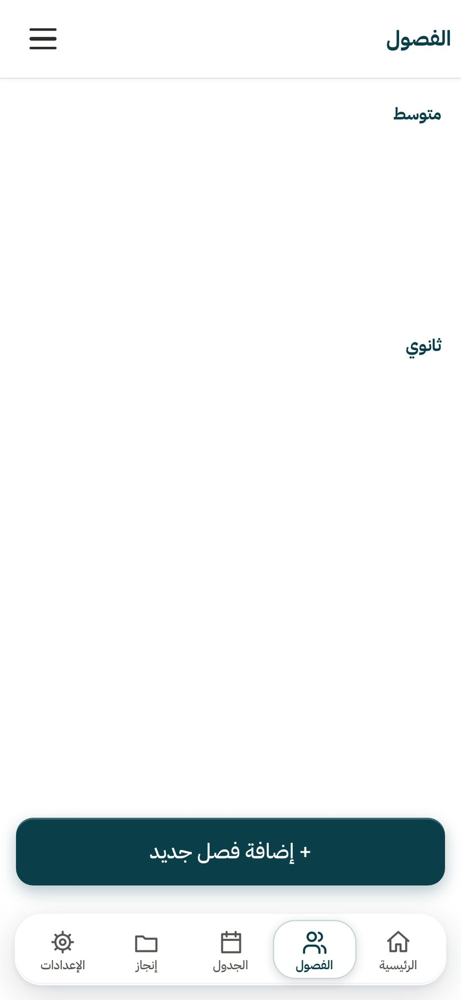
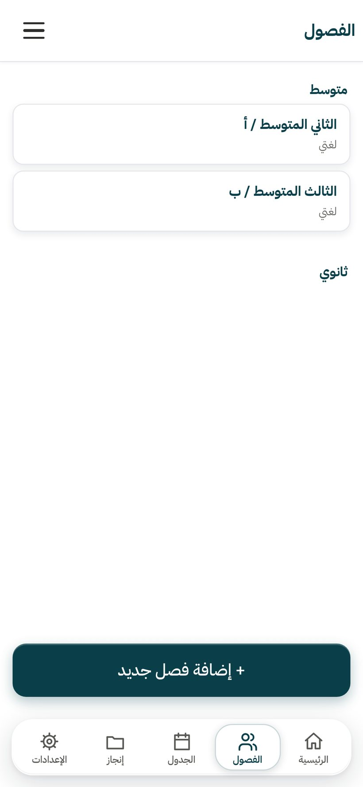
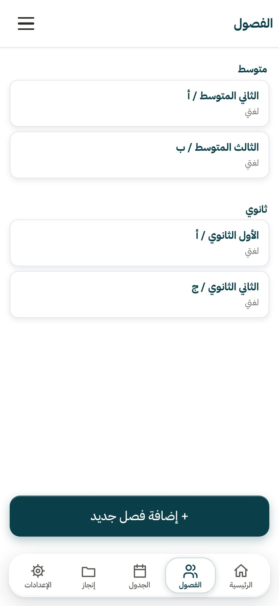
معالجٌ من أربع خطوات: خمسةُ أنواعِ أسئلة، ثمّ مراجعة، ثمّ ورقةٌ بترويسة وزارة التعليم — ومعها نموذجُ إجابةٍ في صفحةٍ للمعلّم وحدَه.

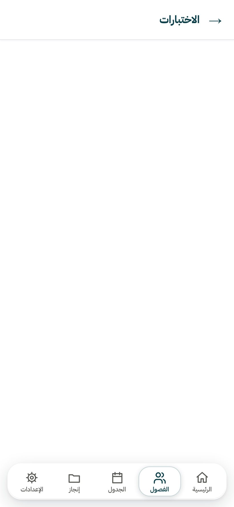
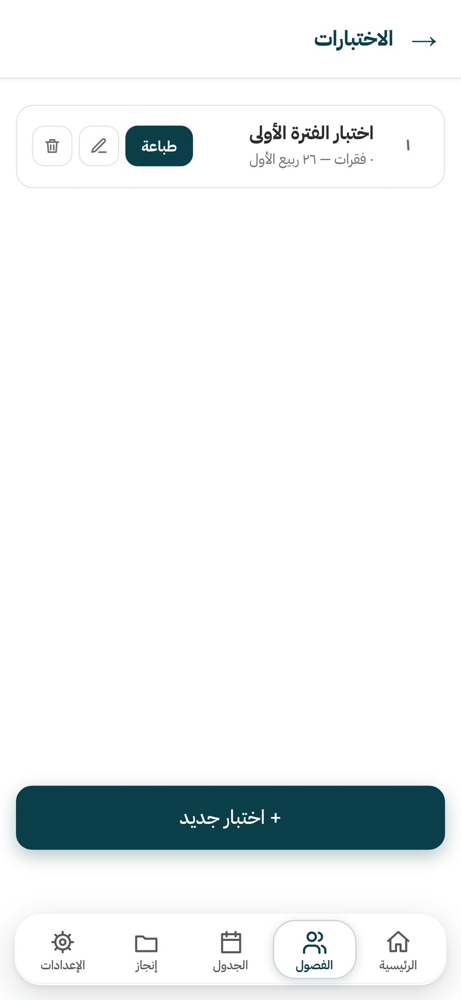

كتالوجٌ جاهزٌ لكلِّ مبادرةٍ فيه خطواتُها وشواهدُها المقترحة — تختار ما يناسب فصلك، فتدخل ملفَّ إنجازك بشواهدها.
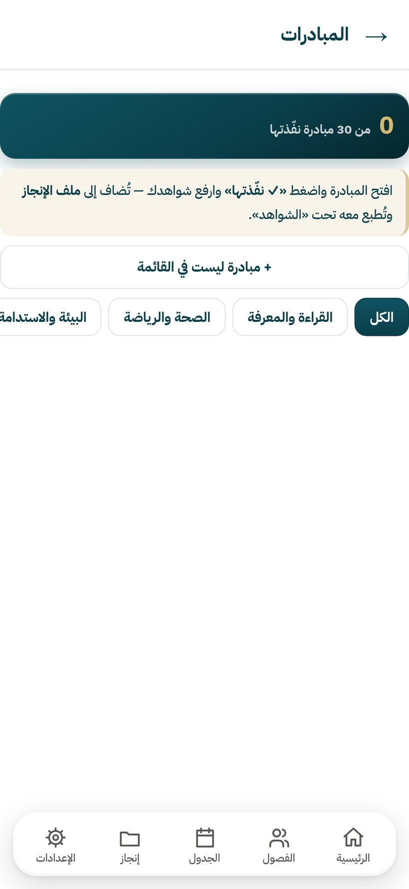

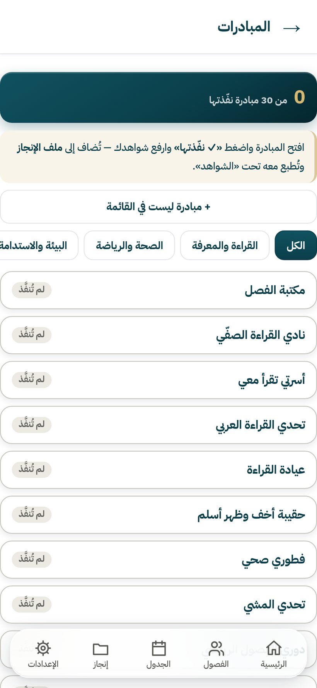
بياناتُك وشهاداتُك وجدولُك واختباراتُك وواجباتُك ومبادراتُك — ثمّ يخرج مستنداً واحداً بغلافٍ وفهرس، جاهزاً للتسليم.
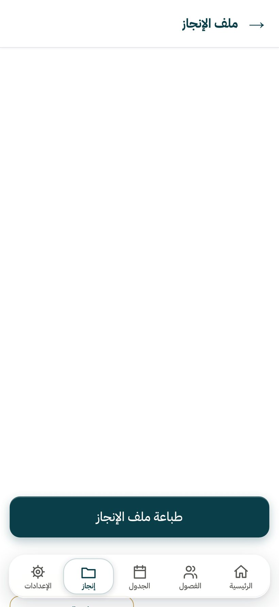
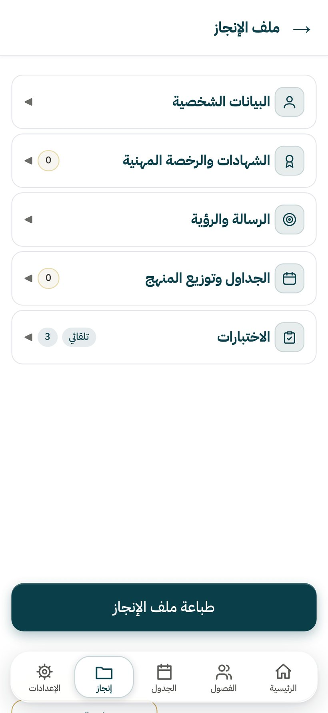
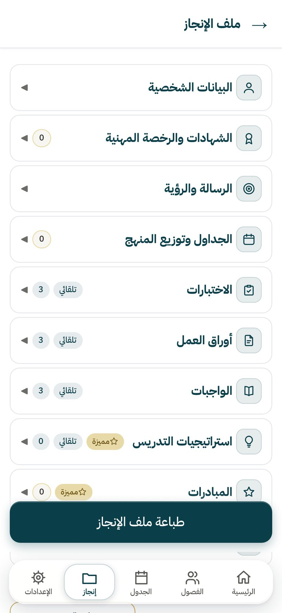
كلُّ ما تراه هنا بناه التطبيقُ فعلاً — بترويسة وزارة التعليم، وإدارةِ تعليمك، واسمِ مدرستك.

اكتب أسئلتك، وتخرج الورقةُ بالتصميم الرسميّ. والترقيمُ يقيس كلَّ كتلةٍ بمسطرةٍ حقيقيّةٍ قبل رصّها — فالسؤالُ وخياراتُه كتلةٌ واحدةٌ لا تنفصل بين صفحتين.

عشرةُ أقسامٍ بالترتيب المعروف، وثلاثةٌ منها تتعبّأ وحدَها من فصولك. ثمّ يخرج مستنداً كاملاً بغلافٍ رسميٍّ وفهرسٍ أرقامُ صفحاته مقيسةٌ بعد الترقيم لا مقدَّرة.
فصلُك الأوّل مجّانيٌّ كاملاً — بلا بطاقةٍ ولا تجربةٍ تنتهي. وإن انتهى اشتراكُك يوماً، لا تُحذف بياناتك.